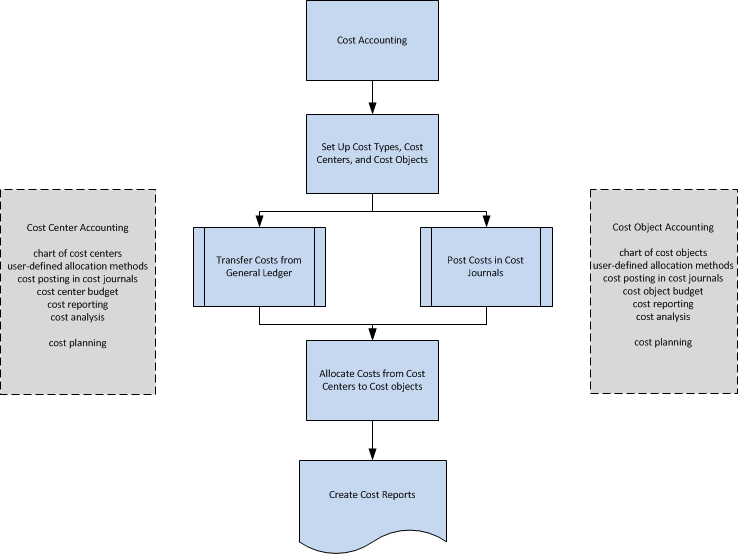

About Cost Accounting
Cost accounting can help you understand the costs of running a business. Cost accounting information is designed to analyze:
- What types of costs that you incur when you run a business?
- Where do the costs occur?
- Who bears the costs?
In cost accounting, you allocate actual and budgeted costs of operations, departments, products, and projects to analyze the profitability of your company.
Workflow in Cost Accounting
Cost accounting has the following main components:
- Cost types, cost centers, and cost objects
- Cost entries and cost journals
- Cost allocations
- Cost budgets
- Cost reporting
The following diagram shows the workflow in cost accounting.

Cost Types, Cost Centers, and Cost Objects
You define cost types, cost centers, and cost objects to analyze what the costs are, where the costs come from, and who should bear the costs.
You define a chart of cost types with a structure and functionality that resembles the general ledger chart of accounts. You can transfer the general ledger income statement accounts or create your own chart of cost types.
Cost centers are departments and profit centers that are responsible for costs and income. Often, there are more cost centers set up in cost accounting than in any dimension that is set up in the general ledger. In the general ledger, usually only the first level cost centers for direct costs and the initial costs are used. In cost accounting, additional cost centers are created for additional allocation levels.
Cost objects are products, product groups, or services of a company. These are the finished goods of a company that carry the costs.
You can link cost centers to departments and cost objects to projects in your company. However, you can link cost centers and cost objects to any dimensions in the general ledger and supplement them with subtotals and titles.
Cost Entries and Cost Journals
Operational costs can be transferred from the general ledger. You can automatically transfer the cost entries from the general ledger to cost entries with each posting. You can also use a batch job to transfer the general ledger entries to cost entries based on daily or monthly summary posting.
In cost journals, you can post cost and activities that do not come from the general ledger or are not generated by allocations. For example, you can post pure operational costs, internal charges, allocations, and corrective entries between cost types, cost centers, and cost objects individually or on a recurring basis.
Cost Allocations
Allocations move costs and revenues between cost types, cost centers, and cost objects. Overhead costs are first posted to cost centers and later charged to cost objects. For example, this might be done in a sales department that sells several products at the same time. Direct costs can be directly allocated to a cost object, such as a material purchased for a specific product.
The allocation base that is used and the accuracy of the allocation definition have an influence on the results of cost allocations. The allocation definition is used to allocate costs first from so-called pre-cost centers to main cost centers and then from cost centers to cost objects.
Each allocation consists of an allocation source and one or more allocation targets. You can allocate actual values or budgeted values by using the static allocation method that is based on a definite value, such as square footage, or an established allocation ratio of 5:2:4. You can also allocate actual values or budgeted values by using the dynamic allocation method with nine predefined allocation bases and 12 dynamic date ranges.
Cost Budgets
You can create as many cost budgets as you want. You can copy the cost budget to the general ledger budget and vice versa. You can transfer budgeted costs as actual costs.
Cost Reporting
Most reports and statistics are based on the posted cost entries. You can set the sorting of the results and use filters to define which data must be displayed. You can create reports for cost distribution analysis. In addition, you can use the standard account schedules to define how your reports for the chart of cost types are displayed.
See Also
Accounting for Costs
Finance
Terminology in Cost Accounting
Working with Business Central